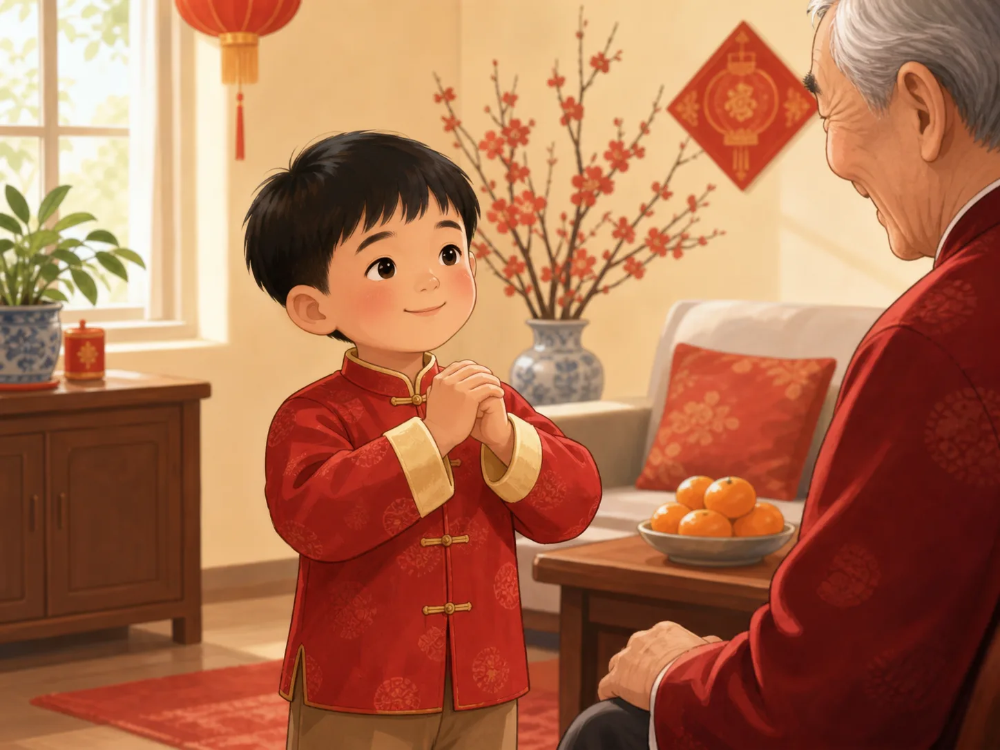

给长辈拜年：双手抱拳的学问
Greeting Elders at New Year
Page 1
大年初一，一句“过年好”
New Year's Morning Begins with a Greeting

In many families, children put on new clothes, greet their elders, and begin the year with kind words.
大年初一早上，很多孩子会被早早叫起来，换上新衣服。客厅里，爷爷奶奶或者外公外婆已经坐好了，等着孩子过来拜年。
孩子走到长辈面前，双手抱拳，轻轻弯一弯腰，说一声“过年好”或者“新年好”。一句话不长，可一开口，过年的味道就出来了。
这个动作不只是好看，它也是一种很安静的礼貌。你在告诉长辈：新的一年开始了，我先来给你送祝福。
On the morning of Lunar New Year, many children get up early and put on new clothes. In the living room, grandparents or other elders are already waiting for the first greetings of the year.
The child walks over, holds one fist inside the other hand, bends a little, and says, "Happy New Year." The words are short, but they carry a warm feeling right away.
The gesture is more than something that looks nice. It is a quiet way of showing respect. A child is saying, "The new year has started, and I want to bring my good wishes to you first."
Page 2
为什么要双手抱拳？
Why Are Both Hands Used?

The gesture gathers the hands together in a way that feels calm, respectful, and kind.
双手抱拳，看上去只是一个小动作，可里面有讲究。传统说法里，男生常常是左手包住右手，女生常常会反过来。不同地方不一定完全一样，现在很多家庭也不会分得那么细。
不过这个动作背后的心意很清楚：不是来逞强的，是来行礼的。把两只手稳稳合在一起，像是在先把自己的劲儿收住，再把礼貌送出去。
所以老人家看到孩子认真学这个动作，常常会特别高兴。因为他们看见的，不只是姿势对不对，也是孩子有没有把尊重放进去。
The cupped-hands greeting may look small, but people have long paid attention to it. In older custom, boys often placed the left hand outside and girls often did the opposite. Different places did not always do it exactly the same way, and many families today do not worry about that detail too much.
But the feeling behind the gesture is easy to understand. You are not stepping forward to show off strength. You are stepping forward to show respect. Bringing both hands together makes the body look calm and controlled.
That is why elders are often happy to see a child learn it carefully. They are not only checking whether the pose looks correct. They are noticing whether real respect is inside it.
Page 3
红包里装的，不只是钱
A Red Envelope Holds More Than Money

Taking a red envelope with both hands means receiving the elder's blessing carefully.
拜完年，很多孩子最期待的，就是红包。长辈把红色的封套递过来，孩子要双手接，还要说“谢谢爷爷奶奶”或者“谢谢叔叔阿姨”。
红包里的钱，不只是普通的钱。中国人常常叫它“压岁钱”。按民间说法，它像是在替孩子压住不好的东西，保佑新一年平平安安。
所以红包更像一份祝福装进了红封套里。过去还有一个规矩：不要当着长辈的面马上拆开数钱。因为真正重要的，不是里面有多少，而是这份心意。
After the greeting comes the part many children wait for most: the red envelope. An elder hands it over, and the child is supposed to take it with both hands and say thank you.
The money inside is not treated as just ordinary money. People often call it lucky money for the new year. In folk belief, it helps press down bad luck and keep a child safe through the year ahead.
That is why the envelope feels more like a blessing wrapped around money. In the past, children were also taught not to tear it open and count the cash right in front of the elder. The important thing was not the number first. The important thing was the care behind it.
Page 4
小小动作，把热闹和礼貌系在一起
One Small Gesture Holds the Holiday Together
现在，每个家庭拜年的动作不一定完全一样。有的会抱拳，有的会鞠躬，有的孩子一紧张，先笑了再说话。可很多人还是一眼就能认出那种感觉：新衣服、笑着的长辈、孩子轻轻走过去说一句“新年好”，家里一下子就暖了起来。
这也是拜年动作好玩的地方。它不大，也不复杂，却把过年的热闹和礼貌系在了一起。你不是随便路过说句话，而是在认真告诉别人：新的一年，我先来祝你平安、开心、顺顺利利。
Today, not every family greets elders in exactly the same way. Some still use the cupped-hands bow. Some simply bow a little. Some children get shy and smile before they remember the words. Even so, many people still recognize the same feeling right away: new clothes, smiling elders, and a child stepping forward to say, "Happy New Year."
That is what makes the gesture special. It is small and simple, yet it ties holiday excitement and good manners together. A child is not just passing by with a quick hello. The child is carefully saying, "At the start of this new year, I want to wish you peace, happiness, and good luck."
小结
In Summary
拜年时，双手抱拳、轻轻弯腰、双手接过红包，这些动作看起来不大，却装着很多人都懂的心意：尊重长辈，也把祝福稳稳接住。
所以过年最动人的地方，常常不只是热闹的鞭炮和好吃的饭菜，也是在这一声“新年好”里，家人把礼貌和温暖传给了下一代。
At New Year, bringing the hands together, bowing a little, and receiving a red envelope with both hands may look small. But those small actions carry a meaning many people understand right away: respect your elders, and receive their blessing with care.
That is why one of the most moving parts of the holiday is not only the noise, the food, or the color. It is also the way families pass down warmth and manners in one simple New Year greeting.